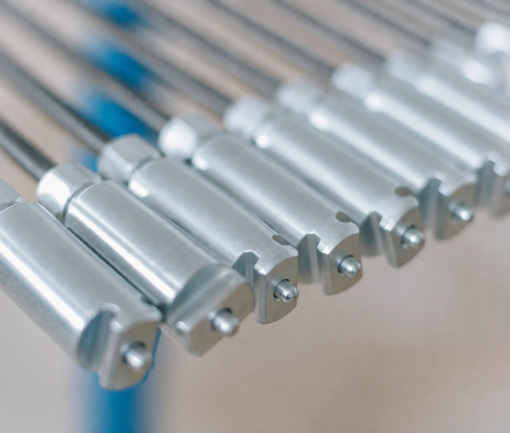
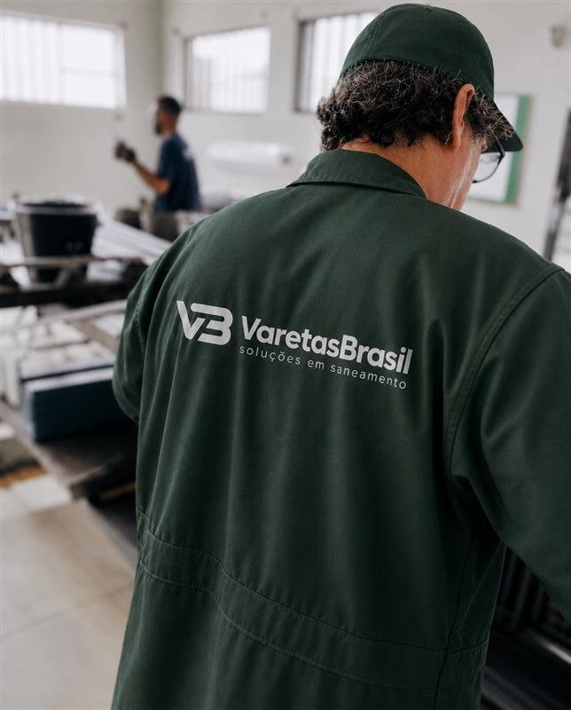
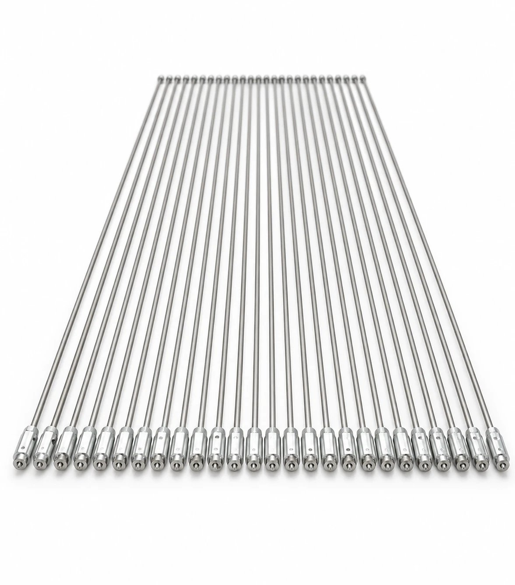
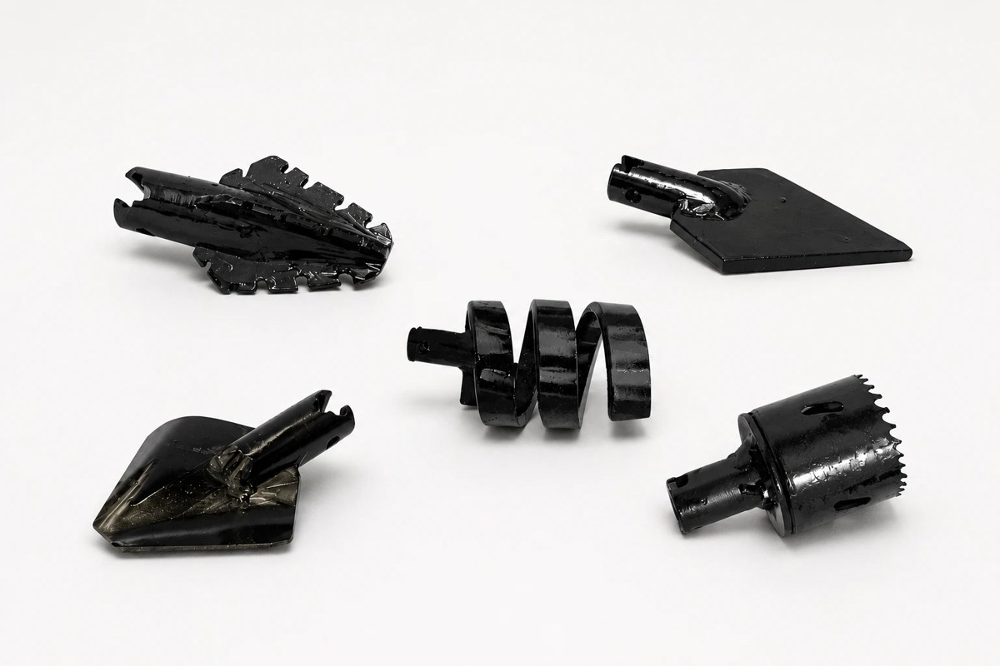
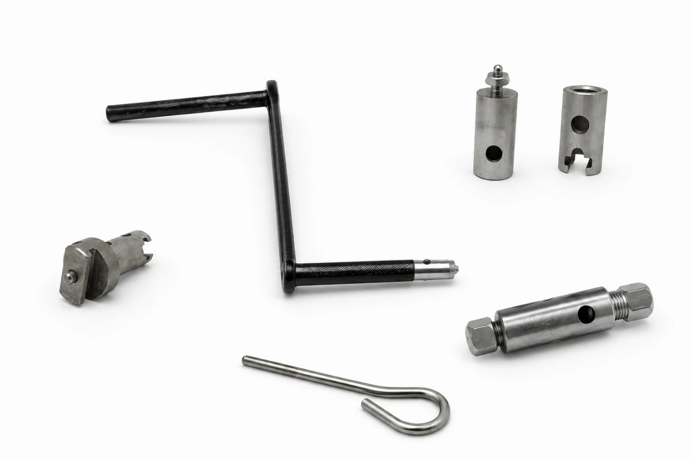
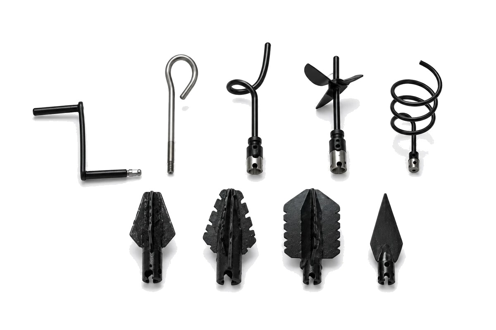

Fabricadas em aço cromo-silício de alto desempenho, nossas varetas são desenvolvidas para suportar o uso intenso em campo, oferecendo máxima resistência, flexibilidade e durabilidade em cada operação.
A Varetas Brasil atua no desenvolvimento e na fabricação de soluções profissionais para desobstrução e saneamento.
Nossas varetas são produzidas em aço cromo-silício, garantindo mais resistência, flexibilidade e desempenho em qualquer tipo de aplicação. Além disso, contamos com uma ampla variedade de pontas e acessórios, desenvolvidos para atender diferentes tipos de obstruções e necessidades operacionais, proporcionando mais eficiência e versatilidade em cada serviço.
Temos orgulho de ser uma empresa nacional focada na excelência, na inovação e na entrega de produtos de alta qualidade, oferecendo soluções confiáveis para profissionais de todo o Brasil.



Alta resistência e flexibilidade para todos os tipos de desobstrução de esgotos e tubulações.
VEJA MAIS
Diversos modelos projetados para diferentes tipos de obstruções pesadas.
VEJA MAIS
Conectores, adaptadores e itens que garantem mais praticidade na rotina de trabalho.
VEJA MAIS
Um kit completo e versátil, desenvolvido para atender diferentes necessidades de desobstrução.
VEJA MAISProdutos desenvolvidos para suportar os trabalhos mais exigentes.
Produção própria com padrão de qualidade Varetas Brasil.
Agilidade no envio para todo o Brasil com segurança e eficiência.
Atendimento especializado para indicar a melhor solução.
Desenvolvemos varetas e componentes conforme sua necessidade.
Redes públicas de esgoto e saneamento urbano.
Manutenção de tubulações em edifícios comerciais e residenciais.
Desobstrução em áreas comuns e ramais internos.
Redes de alta demanda e grande fluxo de pessoas.
Ambientes exigentes e uso intensivo em campo.
Investimos continuamente em tecnologia, processos e pessoas para entregar produtos cada vez melhores e contribuir com um saneamento mais eficiente e sustentável em todo o país.